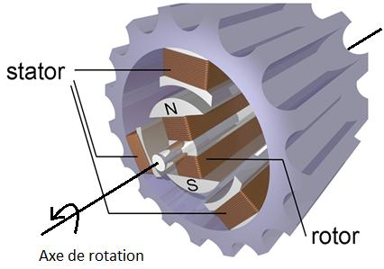
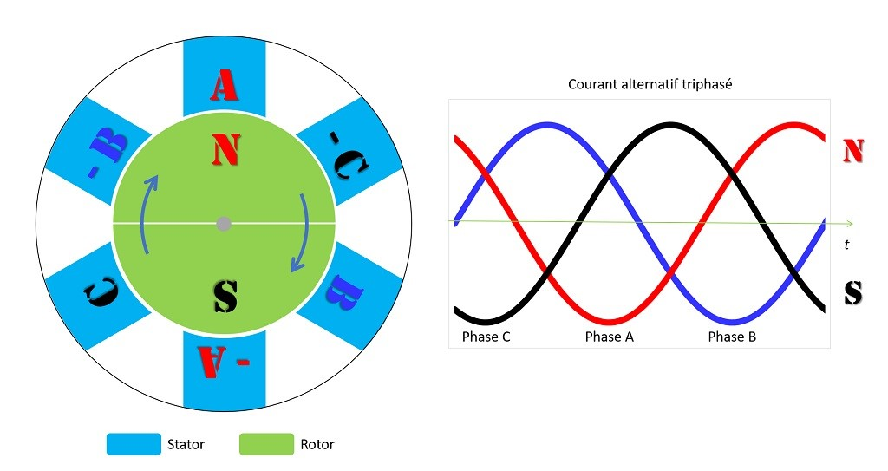
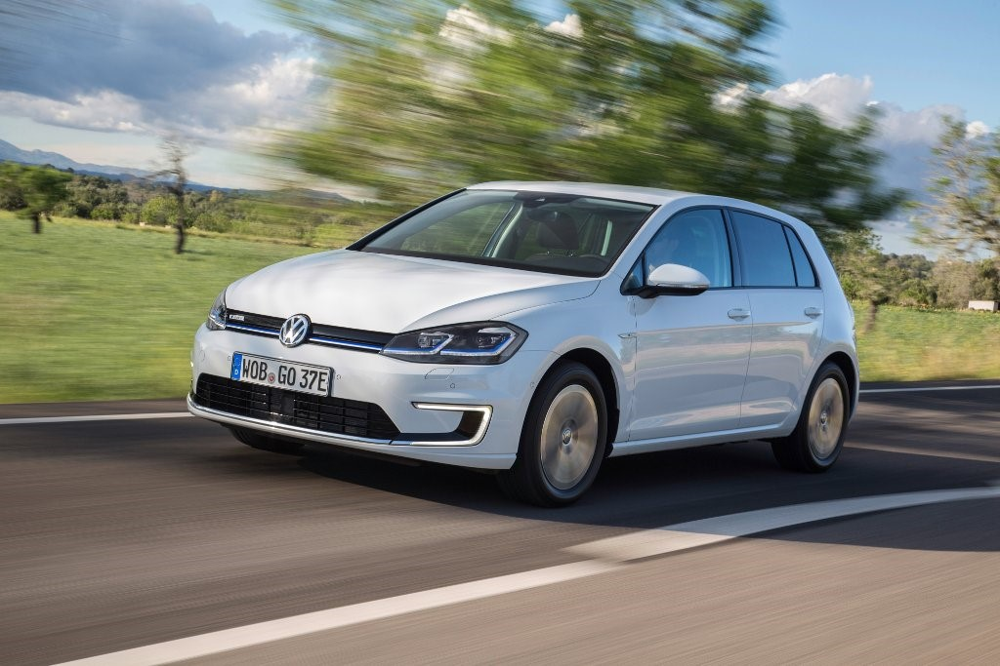
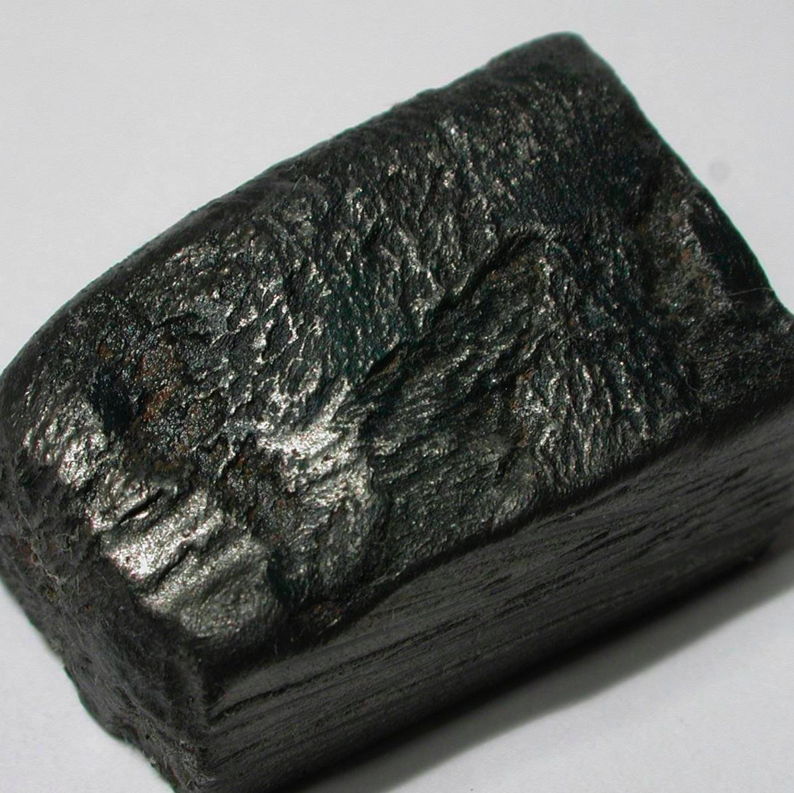

Le moteur de la voiture électrique
Les moteurs électriques s'articulent autour de deux parties :
- Le stator, une pièce fixe
- Le rotor, partie mobile en rotation
Quel que soit le type de moteur, le stator est constitué de bobines de fils électriques en cuivre (entre 1.000 mètres et 2.000 mètres de bobinage) alimentées par un courant alternatif triphasé.
Schéma représentant un stator et un rotor
Le stator est organisé en paires de pôles (pôle Nord et pôle Sud), en référence à un aimant. Chaque paire est constituée de deux bobines opposées et alimentées par la même phase. Lorsqu'elles sont alimentées, l'une des bobines sera donc un pôle Nord tandis que la bobine opposée sera alors un pôle Sud et vice versa lorsque le sens du courant s'inverse. Les trois phases, décalées de 120 degrés l'une par rapport à l'autre, permettent de générer un champ magnétique tournant.
Le rendement d’un moteur électrique est généralement supérieur à 90% et peut, dans les conditions les plus favorables et selon le type de moteur, approcher 100%, alors qu’il est de l’ordre de 40% pour les moteurs thermiques les plus évolués.
Le moteur électrique (tout comme les batteries) doit être refroidi, généralement à l’aide du même type de liquide de refroidissement que celui qui est utilisé avec les moteurs thermiques. Dans le cas d’un moteur électrique, la température du liquide est généralement stabilisée aux alentours de 70 °C (90 °C dans le cas d’un moteur thermique).
Les moteurs à aimants permanents sont les moteurs les plus communs au sein des véhicules électriques actuels (de manière non exhaustive : Chevrolet Bolt, Chevrolet Volt, Nissan Leaf, BMW i3, Kia Soul EV, Volkswagen e-Golf, Formule E, …).
Les moteurs à aimants permanents sont principalement de type NdFeB (alliage de néodyme, de fer et de bore). Outre le néodyme, ces aimants comportent deux autres terres rares : du dysprosium et du praséodyme. Chaque moteur contient environ 2 kg de terres rares.
Les aimants sont intégrés dans le rotor. Ceux-ci vont réagir avec le champ magnétique tournant du stator, à savoir que 2 pôles identiques (Nord / Nord ou Sud / Sud) se repoussent et 2 pôles inverses (Nord / Sud) s'attirent. C'est ce principe qui va mettre en mouvement le rotor.
Le néodyme a pour particularité d’augmenter la puissance de l’aimant tandis que le dysprosium et le praséodyme ont pour rôle d’améliorer les propriétés magnétiques du rotor à haute température ainsi que la résistance à la corrosion.
Image représentant un bloc de néodyme, qui un élément chimique qui fait partie des métaux des terres rares
Le néodyme a pour particularité d’augmenter la puissance de l’aimant tandis que le dysprosium et le praséodyme ont pour rôle d’améliorer les propriétés magnétiques du rotor à haute température ainsi que la résistance à la corrosion.
L’extraction des terres rares peut aussi prendre une dimension écologique. De fait, les méthodes d’extraction et de traitement des terres rares est hautement questionnable sur le plan environnemental. Ce qui nous amène à traiter de la question de l’impact écologique de la voiture électrique.